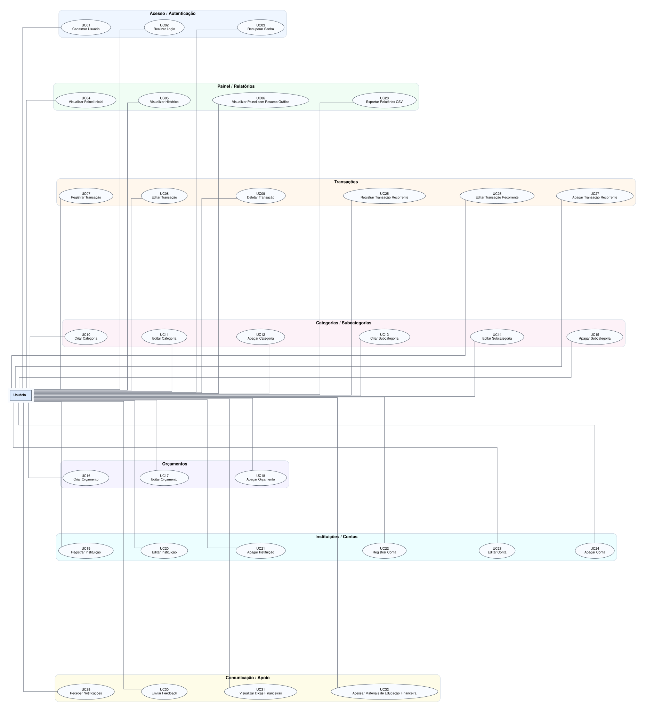

Casos de Uso - TLT Finanças
Documento Consolidado de Especificação de Software

Atores do Sistema
- Usuário: Indivíduo que utiliza o sistema para gerenciar suas finanças pessoais.
UC01 - Cadastrar Usuário
Descrição: Permite ao usuário criar uma conta no sistema.
Pré-condições: Usuário não deve estar cadastrado.
Pós-condições: Conta criada com sucesso.
Fluxo Principal:
- Acessa tela de cadastro.
- Informa dados como nome, email e senha.
- Confirma o cadastro.
- Sistema valida os dados informados.
- Sistema cria a conta.
- Usuário é redirecionado para o login.
Fluxos Alternativos:
- Não existe
Fluxos de Exceção:
- Usuário ou email já cadastrado: sistema exibe erro.
- Dados inválidos: sistema solicita correção.
UC02 - Realizar Login
Descrição: Permite o acesso do usuário à sua conta no sistema.
Pré-condições: Usuário deve estar cadastrado.
Pós-condições: Usuário autenticado no sistema.
Fluxo Principal:
- Acessa a tela de login.
- Informa as credenciais (email e senha).
- Sistema valida as credenciais.
- Acesso ao sistema é concedido.
Fluxos Alternativos:
- Não existe
Fluxos de Exceção:
- Credenciais inválidas: erro exibido.
- Falha de conexão: sistema exibe mensagem de erro.
UC03 - Recuperar Senha
Descrição: Permite ao usuário redefinir sua senha caso a tenha esquecido.
Pré-condições: Usuário possui conta cadastrada e tem acesso ao e-mail vinculado.
Pós-condições: Senha é atualizada e o usuário pode realizar login com a nova credencial.
Fluxo Principal:
- Na tela de login, clica em "Esqueci minha senha".
- Informa o e-mail cadastrado e o sistema valida.
- Sistema envia link de recuperação.
- Usuário acessa o link, informa e confirma nova senha.
- Sistema valida os dados, atualiza a senha e redireciona para o login.
Fluxos Alternativos:
- Recuperação via SMS: Se o usuário tiver um telefone vinculado à conta, ele pode optar por receber um código (OTP) por SMS para redefinir a senha dentro do próprio aplicativo, em vez de acessar um link externo por e-mail.
Fluxos de Exceção:
- Email não cadastrado ou senha inválida: sistema exige correção.
- Falha no envio do e-mail ou link inválido/expirado: sistema informa erro ou solicita nova requisição.
Regras de Negócio:
- O link expira após um período definido e é de uso único.
- Senha deve atender critérios de segurança e senhas anteriores não podem ser reutilizadas.
UC04 - Visualizar Painel Inicial (sem gráficos)
Descrição: Exibe ao usuário uma visão geral simplificada de suas finanças, sem componentes gráficos.
Pré-condições: Usuário autenticado.
Pós-condições: Painel inicial exibido com saldo, últimas transações e resumo básico.
Fluxo Principal:
- Usuário acessa o painel inicial após login.
- Sistema carrega e exibe saldo total, resumo de receitas e despesas do mês atual.
- Sistema lista as últimas transações registradas.
- Usuário visualiza o saldo total e o orçamento mais próximo do limite.
Fluxos Alternativos:
- Modo Privacidade: O usuário toca no ícone de "olho" para ocultar os valores numéricos de saldos e transações visíveis na tela, protegendo as informações de terceiros ao seu redor.
Fluxos de Exceção:
- Nenhum dado registrado: sistema exibe painel vazio com mensagem orientativa.
- Falha ao carregar dados: sistema exibe mensagem de erro e botão para tentar novamente.
UC05 - Visualizar Histórico pelo Painel Inicial
Descrição: Permite ao usuário acessar e visualizar o histórico completo de transações diretamente do painel inicial.
Pré-condições: Usuário autenticado e existência de transações registradas.
Pós-condições: Histórico de transações exibido com opções de filtro e ordenação.
Fluxo Principal:
- No painel inicial, usuário clica em "Ver histórico completo" ou desliza a lista de transações recentes.
- Sistema exibe tela de histórico com lista completa de transações em ordem cronológica inversa.
- Usuário pode aplicar filtros por período, tipo ou categoria.
- Sistema atualiza a lista conforme filtros aplicados.
Fluxos Alternativos:
- Busca por texto: O usuário utiliza a barra de pesquisa para digitar o nome de um estabelecimento ou descrição específica, filtrando a lista independentemente das opções de categoria ou período.
Fluxos de Exceção:
- Nenhuma transação encontrada para os filtros: sistema exibe mensagem "Nenhum resultado".
- Falha ao carregar histórico: sistema exibe erro e botão para recarregar.
UC06 - Visualizar Painel com Resumo Gráfico
Descrição: Exibe painel financeiro consolidado com um resumo gráfico interativo.
Pré-condições: Usuário autenticado.
Pós-condições: Painel com gráficos exibido, apresentando saldo, receitas, despesas e distribuição por categorias.
Fluxo Principal:
- Acessa o dashboard ou área de relatórios visuais.
- Define filtros de período, se necessário.
- Sistema gera e exibe gráficos: saldo total, receitas vs despesas, gastos por categoria.
- Usuário interage com os gráficos (tooltips, zoom, cliques).
Fluxos Alternativos:
- Não existe
Fluxos de Exceção:
- Nenhum dado disponível: sistema exibe painel vazio com mensagem orientativa.
- Período sem movimentações: sistema informa ausência de dados para o período.
UC07 - Registrar Transação (Receita ou Despesa)
Descrição: Permite registrar entradas (receitas) ou saídas (despesas) de dinheiro.
Pré-condições: Usuário autenticado.
Pós-condições: Transação registrada e saldo atualizado.
Fluxo Principal:
- Acessa a função "Nova transação".
- Informa os dados: valor, tipo (receita/despesa), categoria e data.
- Confirma o registro e o sistema salva.
- Saldo é atualizado.
Fluxos Alternativos:
- Não existe
Fluxos de Exceção:
- Dados incompletos, campos vazios ou valores inválidos: sistema exibe erro.
- Sem conexão com internet: transação é salva offline e sincronizada posteriormente.
UC08 - Editar Transação
Descrição: Permite ao usuário modificar os dados de uma transação financeira registrada anteriormente.
Pré-condições: Usuário autenticado e existência de pelo menos uma transação.
Pós-condições: Transação atualizada e saldo recalculado.
Fluxo Principal:
- Acessa a lista de transações e seleciona a transação desejada.
- Clica em "Editar" e o sistema exibe os dados atuais em um formulário editável.
- Usuário altera os campos desejados (valor, tipo, categoria, data).
- Confirma a edição e o sistema valida os novos dados.
- Sistema salva as alterações e atualiza o saldo.
Fluxos Alternativos:
- Não existe
Fluxos de Exceção:
- Dados inválidos ou campos vazios: sistema exibe erro e solicita correção.
- Transação não encontrada: sistema exibe mensagem informativa.
- Usuário cancela a edição: alterações são descartadas.
UC09 - Deletar Transação
Descrição: Permite ao usuário excluir uma transação financeira registrada.
Pré-condições: Usuário autenticado e existência de pelo menos uma transação.
Pós-condições: Transação removida e saldo atualizado corretamente.
Fluxo Principal:
- Acessa a lista de transações, seleciona uma e clica em "Excluir".
- Sistema solicita confirmação da ação e o usuário confirma.
- Sistema remove a transação, atualiza o saldo e exibe mensagem de sucesso.
Fluxos Alternativos:
- Exclusão em Lote: O usuário ativa o modo de seleção, marca várias transações simultaneamente e clica em "Excluir" para remover todas de uma só vez com apenas uma confirmação.
Fluxos de Exceção:
- Transação não encontrada ou erro ao excluir: sistema exibe falha.
- Usuário cancela a operação: exclusão interrompida.
UC10 - Criar Categoria de Transação
Descrição: Permite ao usuário criar uma nova categoria personalizada para classificar suas transações.
Pré-condições: Usuário autenticado.
Pós-condições: Categoria criada e disponível para uso em transações.
Fluxo Principal:
- Acessa as configurações de categorias e seleciona "Nova categoria".
- Informa o nome da categoria e, opcionalmente, escolhe um ícone ou cor.
- Confirma a criação e o sistema valida.
- Sistema salva a nova categoria e a disponibiliza na lista.
Fluxos Alternativos:
-
- Criar categoria inline: Durante o preenchimento, o usuário nota que a categoria desejada não existe e seleciona "Nova Categoria", criando-a diretamente no fluxo do formulário sem perder os dados já inseridos.
Fluxos de Exceção:
- Nome de categoria já existente: sistema exibe erro e sugere outro nome.
- Nome vazio ou inválido: sistema solicita preenchimento correto.
UC11 - Editar Categoria de Transação
Descrição: Permite ao usuário modificar o nome ou aparência de uma categoria existente.
Pré-condições: Usuário autenticado e existência de pelo menos uma categoria.
Pós-condições: Categoria atualizada e alterações refletidas nas transações associadas.
Fluxo Principal:
- Acessa a lista de categorias e seleciona a categoria desejada.
- Clica em "Editar" e altera o nome, ícone ou cor.
- Confirma a edição e o sistema valida.
- Sistema salva as alterações.
Fluxos Alternativos:
- Não existe
Fluxos de Exceção:
- Novo nome já utilizado por outra categoria: sistema exibe erro.
- Categoria padrão do sistema: edição limitada (apenas cor/ícone).
- Usuário cancela: alterações descartadas.
UC12 - Apagar Categoria de Transação
Descrição: Permite ao usuário remover uma categoria personalizada do sistema.
Pré-condições: Usuário autenticado e categoria a ser excluída não pode ser padrão do sistema.
Pós-condições: Categoria removida; transações associadas são movidas para categoria padrão ou solicitam reclassificação.
Fluxo Principal:
- Acessa a lista de categorias e seleciona a categoria.
- Clica em "Excluir" e o sistema verifica se há transações vinculadas.
- Sistema alerta sobre transações que serão desvinculadas e solicita confirmação.
- Usuário confirma e o sistema remove a categoria.
Fluxos Alternativos:
- Exclusão em cascata: O sistema oferece a opção "Apagar categoria e todas as transações vinculadas", permitindo que o usuário limpe de uma só vez a classificação e o histórico atrelado a ela.
Fluxos de Exceção:
- Categoria com transações vinculadas: sistema oferece opção de reclassificar para outra categoria.
- Tentativa de excluir categoria padrão: sistema bloqueia a ação.
- Usuário cancela: categoria mantida.
UC13 - Criar Subcategoria de Transação
Descrição: Permite ao usuário criar uma subcategoria vinculada a uma categoria existente para detalhar melhor suas transações.
Pré-condições: Usuário autenticado e existência de categoria pai.
Pós-condições: Subcategoria criada e disponível para classificação de transações.
Fluxo Principal:
- Acessa configurações de categorias e seleciona uma categoria pai.
- Clica em "Nova subcategoria" e informa o nome.
- Confirma e sistema valida unicidade dentro da categoria pai.
- Sistema salva a subcategoria.
Fluxos Alternativos:
- Conversão de Categoria Principal: O usuário seleciona uma Categoria principal existente no painel geral e escolhe "Converter em subcategoria", selecionando em seguida qual será o novo "Pai" daquele agrupamento.
Fluxos de Exceção:
- Subcategoria já existente na mesma categoria pai: sistema exibe erro.
- Nome vazio: sistema solicita preenchimento.
UC14 - Editar Subcategoria de Transação
Descrição: Permite modificar o nome de uma subcategoria existente.
Pré-condições: Usuário autenticado e subcategoria existente.
Pós-condições: Subcategoria renomeada e transações associadas atualizadas.
Fluxo Principal:
- Acessa a lista de subcategorias dentro da categoria pai.
- Seleciona a subcategoria e clica em "Editar".
- Altera o nome e confirma.
- Sistema valida e salva.
Fluxos Alternativos:
- Mudar Categoria Pai: Durante a edição, o usuário opta por transferir a subcategoria para uma nova Categoria Pai em vez de apenas renomeá-la.
Fluxos de Exceção:
- Novo nome já existe na mesma categoria pai: sistema rejeita.
- Usuário cancela: nome mantido.
UC15 - Apagar Subcategoria de Transação
Descrição: Permite remover uma subcategoria do sistema.
Pré-condições: Usuário autenticado e subcategoria existente.
Pós-condições: Subcategoria removida; transações associadas reclassificadas para a categoria pai ou outra escolhida.
Fluxo Principal:
- Acessa a lista de subcategorias e seleciona a subcategoria.
- Clica em "Excluir" e sistema verifica transações vinculadas.
- Sistema oferece opção de mover transações para categoria pai ou outra subcategoria.
- Usuário escolhe e confirma; sistema remove a subcategoria.
Fluxos Alternativos:
- Não existe
Fluxos de Exceção:
- Usuário cancela: subcategoria mantida.
- Erro ao reclassificar: sistema notifica e aborta.
UC16 - Criar Orçamento
Descrição: Permite criar objetivos financeiros e definir metas/limites de gastos mensais.
Pré-condições: Usuário autenticado.
Pós-condições: Planejamento e meta registrados no sistema.
Fluxo Principal:
- Acessa a área de metas ou planejamento.
- Define o valor/prazo da meta e os limites de gastos por categoria.
- Sistema salva o registro e inicia o acompanhamento do progresso.
Fluxos Alternativos:
- Não existe
Fluxos de Exceção:
- Dados ou valores informados são inválidos: sistema exibe erro.
UC17 - Editar Orçamento
Descrição: Permite ao usuário modificar metas financeiras e limites de gastos existentes.
Pré-condições: Usuário autenticado e existência de pelo menos uma meta ou orçamento cadastrado.
Pós-condições: Meta ou orçamento atualizado e progresso recalculado.
Fluxo Principal:
- Acessa a área de metas e seleciona o planejamento desejado.
- Clica em "Editar" e modifica valores, prazos ou limites de categoria.
- Confirma e o sistema valida os novos dados.
- Sistema salva e atualiza o acompanhamento.
Fluxos Alternativos:
- Edição Restrita ao Mês Vigente: O usuário decide aplicar a alteração dos limites apenas para o mês atual (devido a um gasto atípico), mantendo a regra antiga para os meses futuros.
Fluxos de Exceção:
- Dados inválidos: sistema exibe erro e mantém os valores anteriores.
- Usuário cancela: alterações descartadas.
UC18 - Apagar Orçamento
Descrição: Permite ao usuário remover um planejamento financeiro ou meta do sistema.
Pré-condições: Usuário autenticado e existência de meta ou orçamento.
Pós-condições: Planejamento removido e dados de progresso excluídos.
Fluxo Principal:
- Acessa a lista de metas/orçamentos e seleciona o item.
- Clica em "Excluir" e o sistema solicita confirmação.
- Usuário confirma e o sistema remove o registro.
Fluxos Alternativos:
- Não existe
Fluxos de Exceção:
- Usuário cancela: item mantido.
- Erro ao excluir: sistema exibe mensagem de falha.
UC19 - Registrar Instituição Financeira
Descrição: Permite ao usuário cadastrar uma instituição financeira (banco, corretora, etc.) no sistema.
Pré-condições: Usuário autenticado.
Pós-condições: Instituição registrada e disponível para associação a contas.
Fluxo Principal:
- Acessa "Instituições" no menu e clica em "Nova instituição".
- Informa nome da instituição, tipo (banco, corretora, fintech) e, opcionalmente, logotipo.
- Confirma e o sistema valida.
- Sistema salva a instituição.
Fluxos Alternativos:
- Não existe
Fluxos de Exceção:
- Instituição já cadastrada: sistema exibe erro.
- Dados incompletos: sistema solicita preenchimento.
UC20 - Editar Registro de Instituição
Descrição: Permite modificar os dados de uma instituição financeira previamente cadastrada.
Pré-condições: Usuário autenticado e instituição existente.
Pós-condições: Dados da instituição atualizados.
Fluxo Principal:
- Acessa a lista de instituições e seleciona a desejada.
- Clica em "Editar" e modifica os campos permitidos.
- Confirma e o sistema salva as alterações.
Fluxos Alternativos:
- Não existe
Fluxos de Exceção:
- Nome duplicado com outra instituição: sistema rejeita.
- Usuário cancela: dados originais mantidos.
UC21 - Apagar Registro de Instituição
Descrição: Permite remover uma instituição financeira do sistema.
Pré-condições: Usuário autenticado e instituição sem contas vinculadas ativas.
Pós-condições: Instituição removida do cadastro.
Fluxo Principal:
- Acessa a lista de instituições e seleciona a instituição.
- Clica em "Excluir" e o sistema verifica vínculos com contas.
- Sistema solicita confirmação e usuário confirma.
- Sistema remove a instituição.
Fluxos Alternativos:
- Não existe
Fluxos de Exceção:
- Instituição com contas vinculadas: sistema bloqueia exclusão e orienta remover contas primeiro.
- Usuário cancela: instituição mantida.
UC22 - Registrar Conta em Instituição
Descrição: Permite ao usuário registrar uma conta financeira (corrente, poupança, investimento) vinculada a uma instituição.
Pré-condições: Usuário autenticado e instituição previamente cadastrada.
Pós-condições: Conta registrada e saldo inicial configurado.
Fluxo Principal:
- Acessa "Contas" e seleciona "Nova conta".
- Escolhe a instituição e informa dados: tipo de conta, saldo inicial, descrição.
- Confirma e o sistema valida.
- Sistema salva a conta e a disponibiliza no painel.
Fluxos Alternativos:
- Não existe
Fluxos de Exceção:
- Saldo inicial inválido: sistema exibe erro.
- Instituição não encontrada: sistema orienta cadastrar instituição primeiro.
UC23 - Editar Conta de Instituição
Descrição: Permite modificar os dados de uma conta financeira registrada.
Pré-condições: Usuário autenticado e conta existente.
Pós-condições: Dados da conta atualizados.
Fluxo Principal:
- Acessa a lista de contas e seleciona a conta.
- Clica em "Editar" e modifica dados como saldo, descrição ou tipo.
- Confirma e o sistema salva as alterações.
Fluxos Alternativos:
- Reajuste Automático de Saldo: O usuário não digita o saldo manualmente, optando por inserir o valor atual real de sua conta bancária, e o sistema cria uma transação de "Ajuste de Saldo" para igualar os valores de forma rastreável.
Fluxos de Exceção:
- Saldo editado não pode gerar inconsistências: sistema alerta sobre impacto no histórico.
- Usuário cancela: dados mantidos.
UC24 - Apagar Conta de Instituição
Descrição: Permite apagar o registro de uma conta financeira cadastrada.
Pré-condições: Usuário autenticado e conta existente.
Pós-condições: Conta apagada.
Fluxo Principal:
- Acessa a lista de contas e seleciona a conta.
- Clica em "Apagar".
- Sistema solicita confirmação e usuário confirma.
- Sistema remove a conta.
Fluxos Alternativos:
- Não existe
Fluxos de Exceção:
- Usuário cancela: item mantido.
- Erro ao excluir: sistema exibe mensagem de falha.
UC25 - Registrar Transação Recorrente
Descrição: Permite ao usuário cadastrar uma transação que se repete periodicamente (assinaturas, salário, etc.).
Pré-condições: Usuário autenticado.
Pós-condições: Recorrência registrada e transações futuras serão geradas automaticamente.
Fluxo Principal:
- Acessa "Recorrências" e clica em "Nova recorrência".
- Informa dados da transação base: valor, tipo, categoria, frequência (diária, semanal, mensal, anual) e data de início.
- Opcionalmente define data de término.
- Confirma e o sistema valida e salva.
Fluxos Alternativos:
- Recorrência em Dias Úteis: O usuário assinala a opção de que, caso a data de vencimento caia no fim de semana, o sistema deve registrar e projetar a transação para o próximo dia útil subsequente.
Fluxos de Exceção:
- Frequência inválida ou data de término anterior ao início: sistema exibe erro.
- Valor zerado: sistema rejeita.
UC26 - Editar Transação Recorrente
Descrição: Permite modificar uma recorrência existente.
Pré-condições: Usuário autenticado e recorrência cadastrada.
Pós-condições: Recorrência atualizada; alterações podem afetar transações futuras ou todas as instâncias.
Fluxo Principal:
- Acessa lista de recorrências e seleciona a desejada.
- Clica em "Editar" e modifica os campos valor, tipo, categoria, frequência (diária, semanal, mensal, anual) e data de início.
- Sistema pergunta se a alteração se aplica a todas as instâncias ou apenas às futuras.
- Usuário escolhe e confirma; sistema salva.
Fluxos Alternativos:
- Pular Ocorrência: O usuário opta apenas por pular ou ignorar a ocorrência do mês atual, mantendo as configurações gerais e a programação ativa para o mês subsequente.
Fluxos de Exceção:
- Alteração retroativa pode causar inconsistências: sistema alerta.
- Usuário cancela: recorrência mantida.
UC27 - Apagar Transação Recorrente
Descrição: Permite cancelar uma recorrência, interrompendo a geração de transações futuras.
Pré-condições: Usuário autenticado e recorrência existente.
Pós-condições: Recorrência removida; transações futuras não serão mais geradas.
Fluxo Principal:
- Acessa lista de recorrências e seleciona a recorrência.
- Clica em "Excluir" e sistema pergunta como lidar com transações já geradas, se mantem ou remove todas.
- Usuário escolhe manter ou remover instâncias futuras e confirma.
- Sistema processa a exclusão.
Fluxos Alternativos:
- Pausar Recorrência: O usuário decide pausar a assinatura indefinidamente, interrompendo as previsões futuras sem remover a configuração matriz para fácil reativação no futuro.
Fluxos de Exceção:
- Usuário cancela: recorrência mantida.
- Erro ao remover instâncias: sistema notifica falha parcial.
UC28 - Exportar Relatórios CSV
Descrição: Permite exportar relatórios financeiros em formato CSV.
Pré-condições: Usuário autenticado e existência de dados registrados.
Pós-condições: Relatório gerado, exibido e disponibilizado para download.
Fluxo Principal:
- Acessa a área de relatórios.
- Escolhe o formato de exportação e confirma.
- Sistema gera os gráficos/relatório e disponibiliza para download.
- Usuário realiza o download do arquivo.
Fluxos Alternativos:
- Compartilhamento Direto: Após a geração do CSV, em vez do download para a pasta local, o sistema abre o modal nativo do dispositivo móvel para compartilhamento (ex: WhatsApp, Email ou Google Drive).
Fluxos de Exceção:
- Período inválido ou sem dados suficientes: sistema solicita correção ou emite aviso.
- Formato não suportado ou erro ao gerar/baixar: sistema informa falha.
UC29 - Receber Notificações de Alerta
Descrição: Notificação de limites de gastos atingidos ou próximos de 80%.
Pré-condições: Limite de gastos deve estar previamente definido.
Pós-condições: Alertas enviados ao usuário por meio de notificações push ou dentro do sistema.
Fluxo Principal:
- Sistema monitora os gastos do usuário em relação aos limites definidos.
- Quando um limite é atingido ou está próximo de 80%, o sistema gera um alerta.
- Usuário recebe a notificação no dispositivo ou na central de notificações do app.
- Usuário pode tocar na notificação para ver detalhes.
Fluxos Alternativos:
- Central in-app: O usuário com permissões de Push desativadas (ou no modo Não Perturbe) acessa o histórico de limites estourados através de uma "Central de Avisos" representada pelo ícone de sino dentro do próprio aplicativo.
Fluxos de Exceção:
- Limite não configurado: sistema não envia notificação de limite.
- Permissão de notificação negada: sistema exibe alerta apenas internamente.
UC30 - Enviar Feedback
Descrição: Permite enviar feedback, reportar erros ou sugerir melhorias para o app TLT Finanças.
Pré-condições: Usuário autenticado.
Pós-condições: Feedback registrado e confirmação de envio exibida ao usuário.
Fluxo Principal:
- Acessa "Enviar feedback", seleciona o tipo (erro, sugestão, elogio) e descreve o problema/sugestão.
- Opcionalmente, anexa arquivos/imagens e confirma.
- Sistema valida, registra o feedback e exibe a confirmação de envio.
Fluxos Alternativos:
- Envio de Log de Diagnóstico Automático: Após uma falha fatal (crash), ao reiniciar o app o sistema detecta o ocorrido e sugere o envio de um relatório gerado automaticamente contendo os rastros da falha (stack trace), exigindo apenas o consentimento do usuário.
Fluxos de Exceção:
- Descrição vazia ou arquivo grande/inválido: sistema exibe erro.
- Falha no envio: sistema sugere tentar novamente mais tarde.
UC31 - Visualizar Dicas Financeiras
Descrição: Usuário acessa dicas financeiras personalizadas com base no comportamento do usuário.
Pré-condições: Usuário autenticado.
Pós-condições: Dicas exibidas ao usuário em área específica.
Fluxo Principal:
- Sistema analisa o comportamento financeiro do usuário.
- Com base nos padrões identificados, gera dicas personalizadas.
- Usuário acessa a seção "Dicas" no menu.
- Sistema exibe as dicas geradas.
Fluxos Alternativos:
- Refinamento do Algoritmo: O usuário interage com uma dica fornecendo feedback rápido (ex: marcando com botões "Útil" ou "Irrelevante"), treinando o algoritmo e solicitando a substituição imediata da dica por uma nova.
Fluxos de Exceção:
- Dados insuficientes de uso: sistema exibe dicas genéricas de educação financeira.
- Falha ao gerar dicas: sistema convida usuário a retornar mais tarde.
UC32 - Acessar Materiais de Educação Financeira
Descrição: Permite acessar uma aba com conteúdos educativos recomendados.
Pré-condições: Autenticação no sistema e conexão ativa com a internet.
Pós-condições: Materiais visualizados e acesso registrado.
Fluxo Principal:
- No menu principal, seleciona "Materiais de Educação Financeira".
- Sistema carrega os conteúdos, divididos por categorias.
- Usuário seleciona um material e consome o conteúdo exibido.
Fluxos Alternativos:
- Download para acesso offline: O usuário clica no ícone de nuvem para baixar um material em PDF, salvando-o no armazenamento local do dispositivo para leitura sem conexão no futuro.
Fluxos de Exceção:
- Falha de conexão ou conteúdo indisponível/link inválido: sistema exibe erro ou retorna à lista.